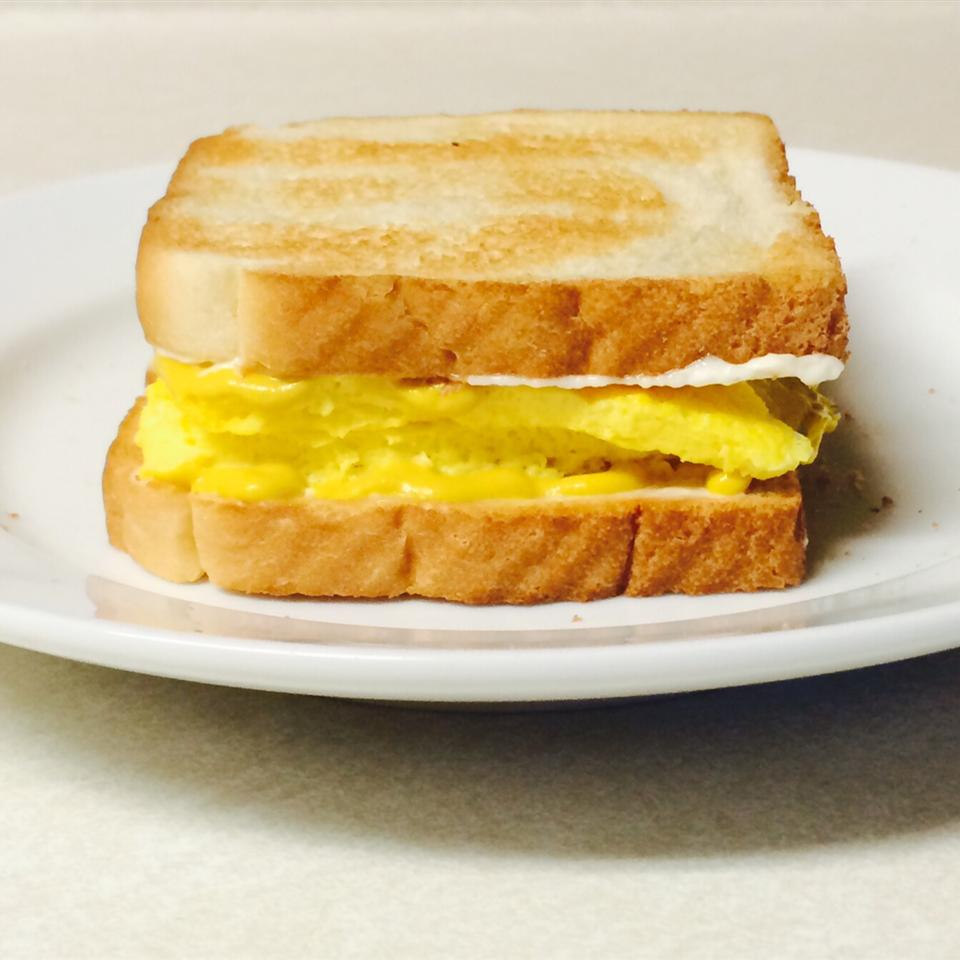

Tom's Scrambled Egg

Description
It is an amazing recipe made by Tom's dad.
Ingredients
- 2 eggs, beaten
- 1 tablespoon milk
- 1 pinch salt
- 2 tablespoons mayonnaise
- 2 slices bread, toasted
- 1 teaspoon prepared yellow mustard
Steps
- Beat eggs, milk, and salt together in a bowl.
- Heat a small nonstick skillet over medium heat. Cook eggs in hot skillet without stirring until set on the bottom, about 1 1/2 minutes. Flip eggs and cook without stirring until set on the other side, about 1 minute more. Remove from heat.
- Spread 1 tablespoon of mayonnaise on each piece of toast. Spread mustard over mayonnaise onto each piece of toast. Place eggs on one piece of toast and top with remaining toast.
Return to homepage